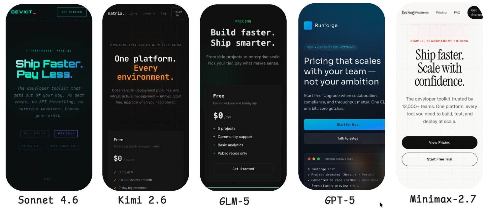

A code harness runs two layers.
A model, and ordinary code: Python, Rust, famously bash. Line the agent up against a compiler and they map stage for stage. The weights are the middle IR.
Loops.
Agent loop
the model calls tools until done
The model calls tools until the task is done. It is the tightest cycle, and everyone already ships it.
/goal · /loopVerification loop
a grader scores, then feeds back
A grader scores the output against a rubric. If it falls short, it goes back with feedback. The grader can be code or another model.
Event-driven loop
a trigger from outside fires it
An event fires and the agent runs on its own. Now it is a component inside a larger system, not a tool you poke.
Hill-climbing loop
it points at the passes, between runs
It does not return to a node. It points at the passes: an analysis agent reads the traces and rewrites the harness itself.
Reward is
All You Need.

A company should be able to switch out a 'generalist' model without losing the 'company veteran' expertise built into their learning system. This is the key 'test' of your control and sovereignty in the era ahead.